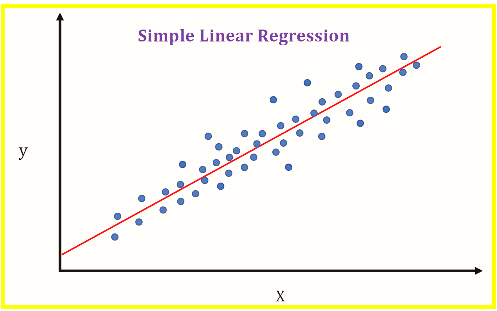
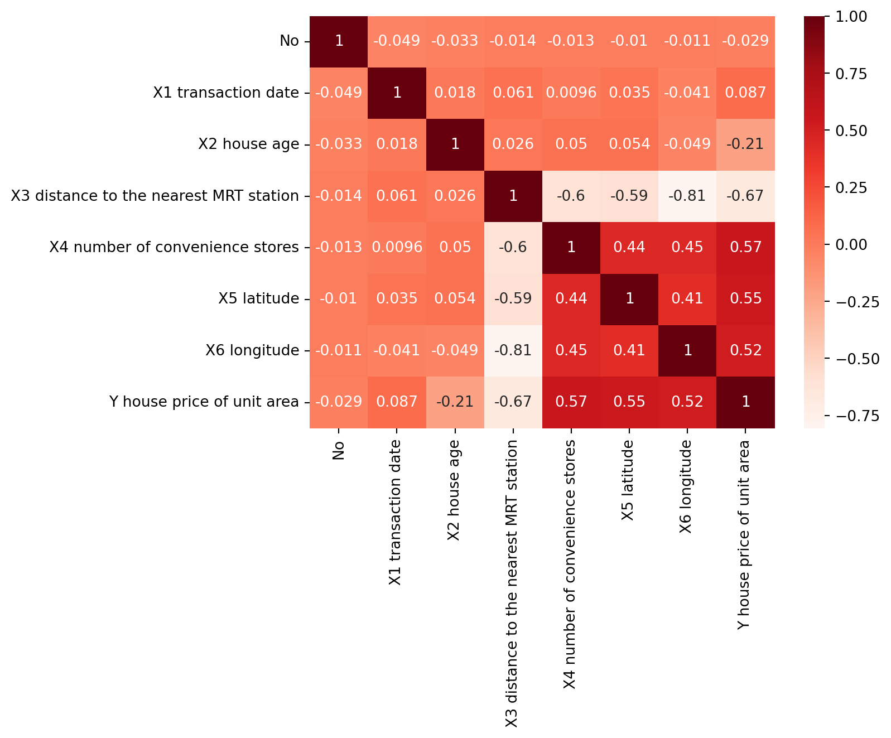
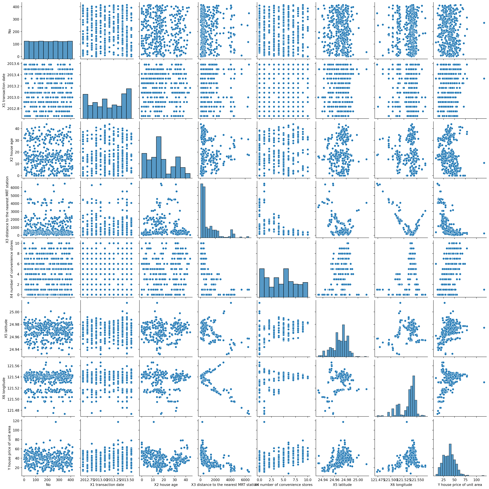
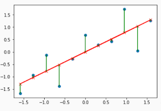
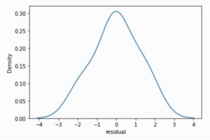
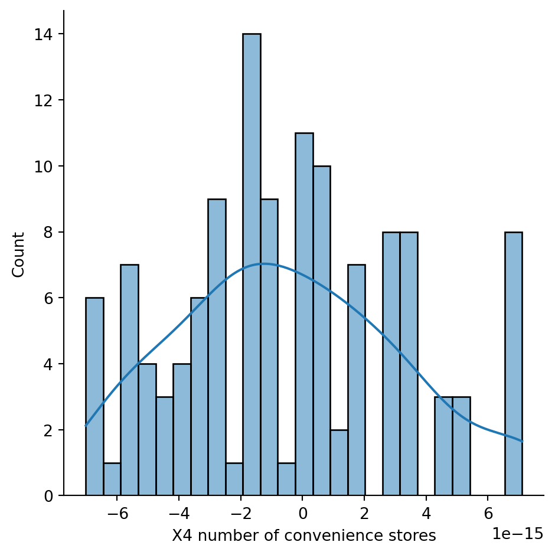
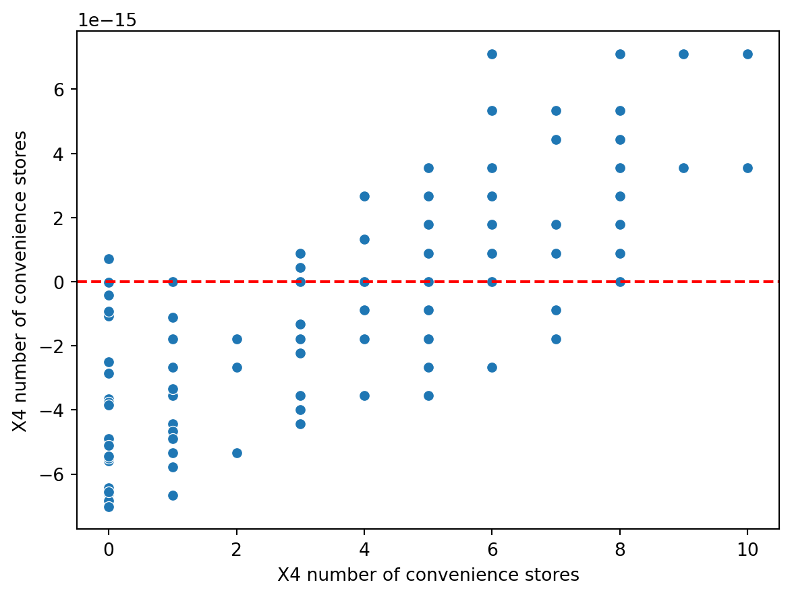

import pandas as pd
import numpy as np
import matplotlib.pyplot as plt
import seaborn as sns
import hvplot.pandas
from sklearn.model_selection import train_test_split
from sklearn import metrics
from sklearn.linear_model import LinearRegression
%matplotlib inline
Contents:
What Is Linear Regression?
Example of Linear Regression with Real estate price prediction dataset.
Data Exploration
Model Evaluation
Residual Analysis
Linear Regression
Linear regression is a fundamental statistical and machine learning technique used to predict a continuous outcome variable (dependent variable) based on one or more predictor variables (independent variables). The relationship between the predictors and the outcome is assumed to be linear. The basic form of a linear regression model with one predictor is y = B0 + B1 * x, where y is the dependent variable, x is the independent variable, B0 is the intercept, and B1 is the slope coefficient.
In the context of machine learning, particularly with the use of Python, the scikit-learn library is often utilized for implementing linear regression models. Scikit-learn is a robust and popular library that provides efficient tools for data mining and data analysis, including linear regression.
In the provided example, linear regression is applied to predict real estate prices based on various features such as house age, proximity to the nearest MRT station, number of convenience stores, and geographic coordinates. The typical machine learning workflow is followed:
Data Preparation: Libraries like pandas, numpy, and scikit-learn are used to load and manipulate the dataset.
Exploratory Data Analysis (EDA): Correlations between variables are analyzed using tools like df.corr() and visualized with sns.pairplot.
Feature Selection and Model Training: The dataset is split into training and testing sets. A linear regression model is trained using scikit-learn’s LinearRegression().
Model Evaluation: Performance metrics like MAE, MSE, and RMSE are calculated to assess the model’s accuracy in making predictions.
Residual Analysis: Residuals (differences between actual and predicted values) are examined. A clear pattern in the residual plot suggests that linear regression may not be suitable due to potential non-linearity, outliers, or influential data points.
Example for Linear Regression
df=pd.read_csv('C:/Users/Lenovo/Desktop/MLBlog-gh-pages/posts/linearRegression/Real estate.csv')df.head()| No | X1 transaction date | X2 house age | X3 distance to the nearest MRT station | X4 number of convenience stores | X5 latitude | X6 longitude | Y house price of unit area | |
|---|---|---|---|---|---|---|---|---|
| 0 | 1 | 2012.917 | 32.0 | 84.87882 | 10 | 24.98298 | 121.54024 | 37.9 |
| 1 | 2 | 2012.917 | 19.5 | 306.59470 | 9 | 24.98034 | 121.53951 | 42.2 |
| 2 | 3 | 2013.583 | 13.3 | 561.98450 | 5 | 24.98746 | 121.54391 | 47.3 |
| 3 | 4 | 2013.500 | 13.3 | 561.98450 | 5 | 24.98746 | 121.54391 | 54.8 |
| 4 | 5 | 2012.833 | 5.0 | 390.56840 | 5 | 24.97937 | 121.54245 | 43.1 |
df.shape(414, 8)df.info()<class 'pandas.core.frame.DataFrame'>
RangeIndex: 414 entries, 0 to 413
Data columns (total 8 columns):
# Column Non-Null Count Dtype
--- ------ -------------- -----
0 No 414 non-null int64
1 X1 transaction date 414 non-null float64
2 X2 house age 414 non-null float64
3 X3 distance to the nearest MRT station 414 non-null float64
4 X4 number of convenience stores 414 non-null int64
5 X5 latitude 414 non-null float64
6 X6 longitude 414 non-null float64
7 Y house price of unit area 414 non-null float64
dtypes: float64(6), int64(2)
memory usage: 26.0 KBdf.corr()| No | X1 transaction date | X2 house age | X3 distance to the nearest MRT station | X4 number of convenience stores | X5 latitude | X6 longitude | Y house price of unit area | |
|---|---|---|---|---|---|---|---|---|
| No | 1.000000 | -0.048658 | -0.032808 | -0.013573 | -0.012699 | -0.010110 | -0.011059 | -0.028587 |
| X1 transaction date | -0.048658 | 1.000000 | 0.017549 | 0.060880 | 0.009635 | 0.035058 | -0.041082 | 0.087491 |
| X2 house age | -0.032808 | 0.017549 | 1.000000 | 0.025622 | 0.049593 | 0.054420 | -0.048520 | -0.210567 |
| X3 distance to the nearest MRT station | -0.013573 | 0.060880 | 0.025622 | 1.000000 | -0.602519 | -0.591067 | -0.806317 | -0.673613 |
| X4 number of convenience stores | -0.012699 | 0.009635 | 0.049593 | -0.602519 | 1.000000 | 0.444143 | 0.449099 | 0.571005 |
| X5 latitude | -0.010110 | 0.035058 | 0.054420 | -0.591067 | 0.444143 | 1.000000 | 0.412924 | 0.546307 |
| X6 longitude | -0.011059 | -0.041082 | -0.048520 | -0.806317 | 0.449099 | 0.412924 | 1.000000 | 0.523287 |
| Y house price of unit area | -0.028587 | 0.087491 | -0.210567 | -0.673613 | 0.571005 | 0.546307 | 0.523287 | 1.000000 |
sns.heatmap(df.corr(), annot=True,cmap='Reds')<Axes: >
Exploratory Data Analysis (EDA)
sns.pairplot(df)
<seaborn.axisgrid.PairGrid at 0x7fcf18e2e910>
X=df.drop('Y house price of unit area', axis=1)
y=df['X4 number of convenience stores']print("X=",X.shape,"\ny=", y.shape)X= (414, 7)
y= (414,)X_train, X_test, y_train, y_test = train_test_split(X, y, test_size=0.3, random_state=101)X_train.shape(289, 7)X_test.shape(125, 7)Linear Regression
model = LinearRegression()model.fit(X_train, y_train)LinearRegression()In a Jupyter environment, please rerun this cell to show the HTML representation or trust the notebook.
On GitHub, the HTML representation is unable to render, please try loading this page with nbviewer.org.
LinearRegression()
model.coef_array([-1.33431232e-17, -8.23993651e-16, -1.24336375e-16, 6.64430818e-19,
1.00000000e+00, 1.56601898e-14, 8.92570291e-15])pd.DataFrame(model.coef_, X.columns, columns=['Coedicients'])| Coedicients | |
|---|---|
| No | -1.334312e-17 |
| X1 transaction date | -8.239937e-16 |
| X2 house age | -1.243364e-16 |
| X3 distance to the nearest MRT station | 6.644308e-19 |
| X4 number of convenience stores | 1.000000e+00 |
| X5 latitude | 1.566019e-14 |
| X6 longitude | 8.925703e-15 |
Predictions from our Model
y_pred = model.predict(X_test)Regression Evaluation Metrics
Here are three common evaluation metrics for regression problems:
Mean Absolute Error (MAE) is the mean of the absolute value of the errors: 1n∑i=1n|yi−y^i|
Mean Squared Error (MSE) is the mean of the squared errors: 1n∑i=1n(yi−y^i)2
Root Mean Squared Error (RMSE) is the square root of the mean of the squared errors: 1n∑i=1n(yi−y^i)2−−−−−−−−−−−−√
Comparing these metrics:
- MAE is the easiest to understand, because it’s the average error.
- MSE is more popular than MAE, because MSE “punishes” larger errors, which tends to be useful in the real world.
- RMSE is even more popular than MSE, because RMSE is interpretable in the “y” units. All of these are loss functions, because we want to minimize them.
MAE= metrics.mean_absolute_error(y_test, y_pred)
MSE=metrics.mean_squared_error(y_test, y_pred)
RMSE= np.sqrt(MSE)MAE2.9990405857085223e-15MSE1.340362315924368e-29RMSE3.661095895936582e-15df['X4 number of convenience stores'].mean()4.094202898550725Residual Histogram
- Often for Linear Regression it is a good idea to separately evaluate residuals (y−y^)
and not just calculate performance metrics (e.g. RMSE).
Let’s explore why this is important…
The residual eerors should be random and close to a normal distribution.


test_residual= y_test - y_predpd.DataFrame({'Error Values': (test_residual)}).hvplot.kde()sns.displot(test_residual, bins=25, kde=True)
<seaborn.axisgrid.FacetGrid at 0x7fcef584d6d0>
Residual plot shows residual error VS. true y value.
sns.scatterplot(x=y_test, y=test_residual)
plt.axhline(y=0, color='r', ls='--')<matplotlib.lines.Line2D at 0x25714585df0>
Residualplot showing a clear pattern, indicating Linear Regression no valid!
In summary, this example demonstrates the application of linear regression in predicting real estate prices while emphasizing the importance of each step in the machine learning process, from data preparation to model evaluation and residual analysis.